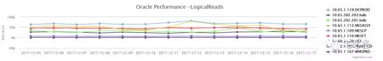
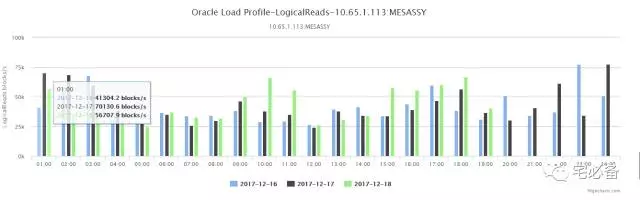
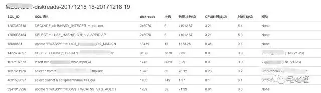
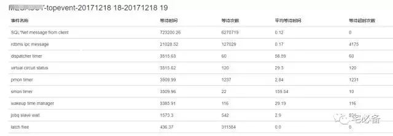

利用Django监控数据库性能并定位问题
2017-12-18 Python 宅必备
开发环境
操作系统:CentOS 7.4
Python版本 :3.6
Django版本: 1.10.5
操作系统用户:oms
数据处理:pandas
前端展示:highcharts
上周我们通过一周的时间讲述了如何监控数据库的性能趋势并找出具体的语句
这周我们将这些应用在日常的工作中
1. Oralce性能状态趋势(天)
首先是整体的趋势，以天为单位，这样我们才会对我们维护的数据库了然于心

在这里我们可以看到每天的情况，对于某天的异常我们继续下一步查看更详细的
2.Oracle性能状态趋势(小时)
这里我们观察到每天各个时间段的情况，定位到具体的时间点

定位到时间点后我们可以通过TOP SQL 界面定位到语句
3. 查找各个时间段的TOP 语句和等待事件
也可以查找这个时间段的等待事件

